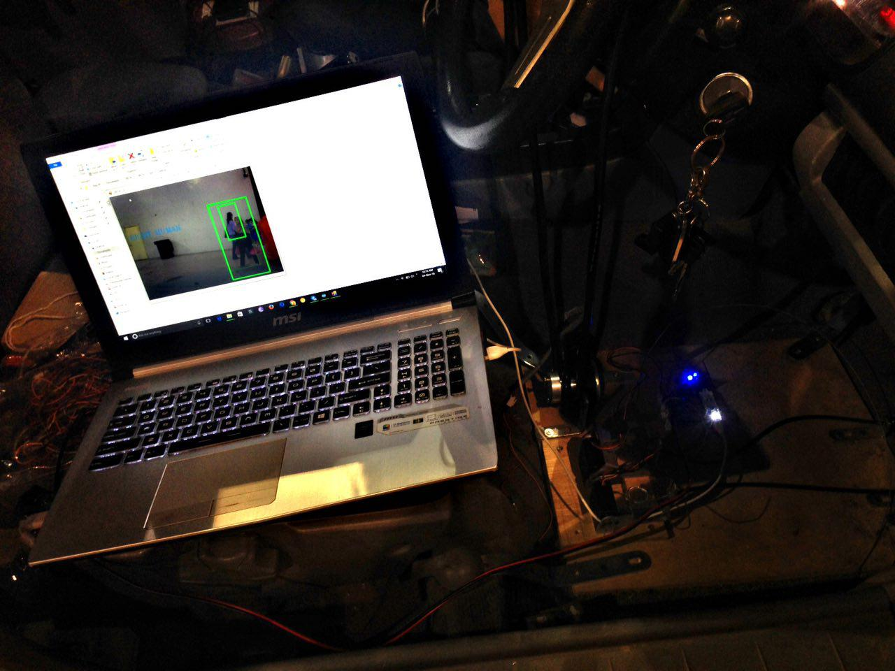
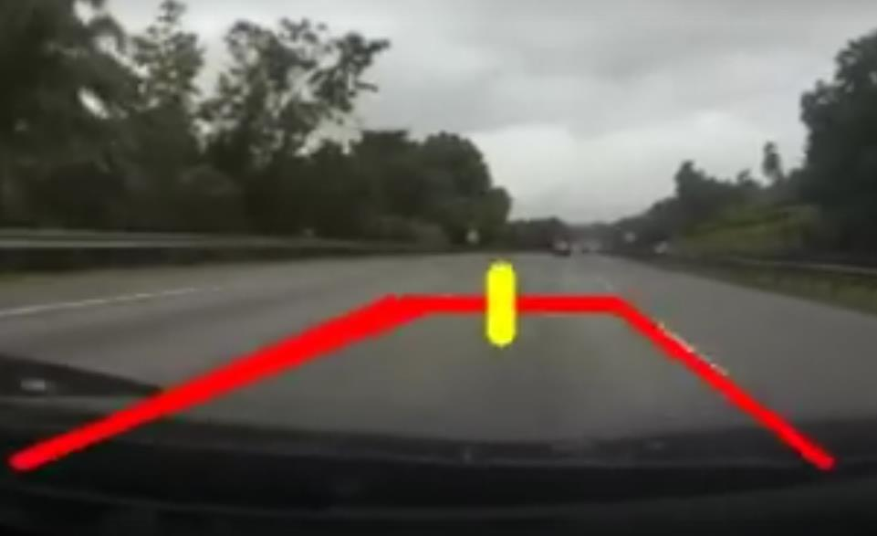
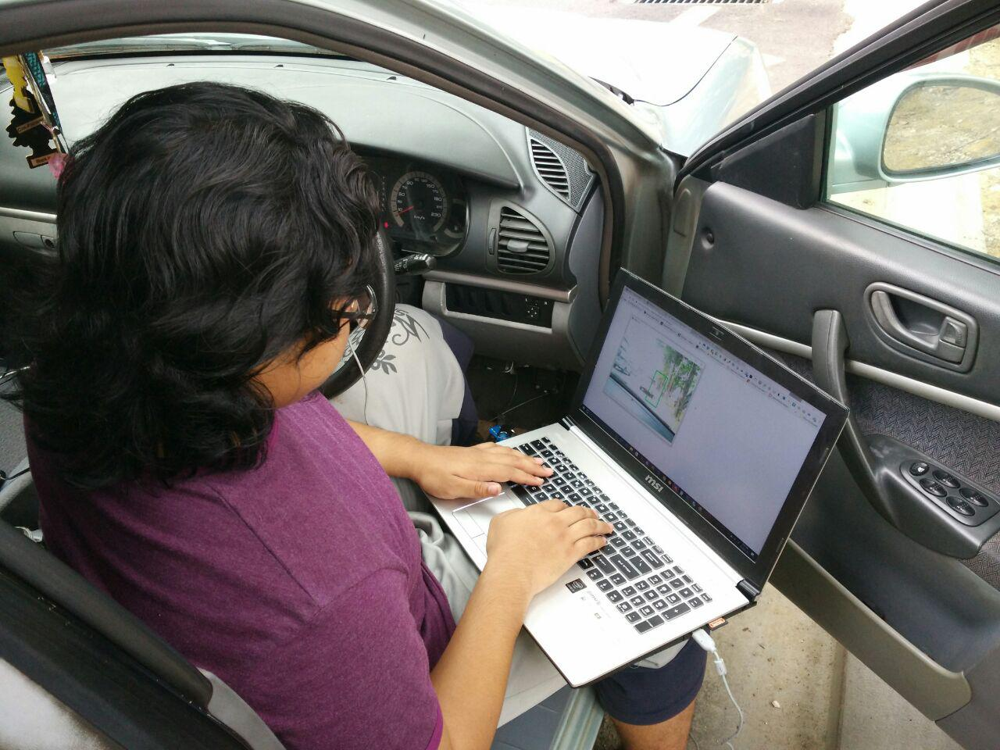
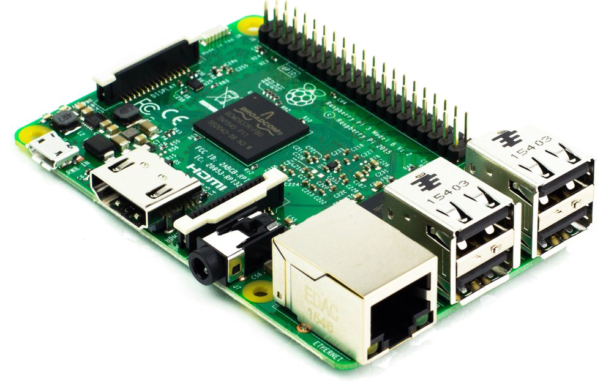
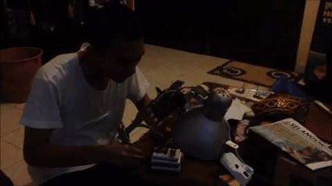
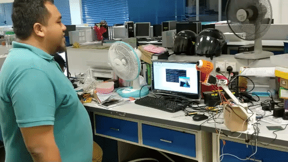
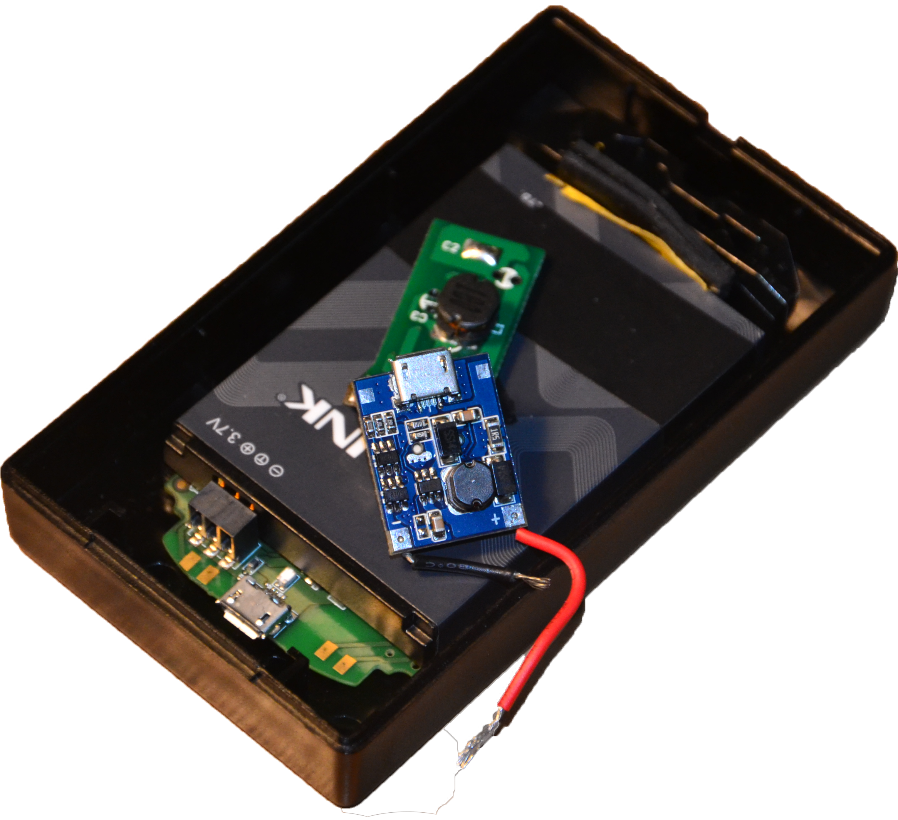
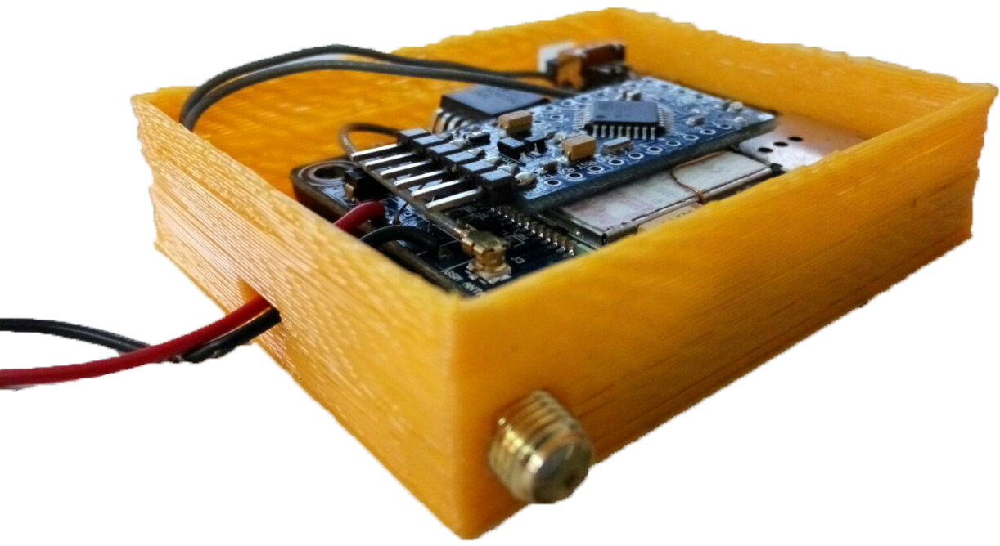

MiCE also known as Miniture Crumbs Essence is a small version of full vehicle telematics system and doing mapping on road for holes and broken infrastructure while doing standard tracking and driving analysis. For MiCE, it just doing simple tracking and driving analytics for vehicles. A device is installed inside a car to track the location and driving and the information is analyzed on the cloud and extra management function in prepared for the admin to manage the driver and the vehicle depand on the analytics.
There are a lot reasons why the telematics system is needed. For our clients, these are the reasons:
Timing or schedule of campus busses are never available and journey travelling is made difficult.
Field staff have clashing time uses for official campus vehicle during events.
Vehicle maintenance is not being logged properly and administration is unable to check for compliance.
Misuse of campus vehicles amongst staff members is rising.
We started by doing a site visit to the campus office and garage. We make a plan with the admins on how to bring the bus for installation because drivers should not know about the telematics system. Then after all agree with the plan, the installation is executed.
The Elements
Vehicle
To track, monitor and classify all vehicles such as busses, sedans and trucks.
Staff
An online system for managing both vehicles and staff in terms of daily operations or usage.
Students
An online web interface or mobile application to view location and schedule of busses to make travel plans within campus.
Understanding the need
Manual vehicle records using note books or files can something be inaccurate due to human error. Because all of the data is coming from a human, it can be exploited for self interest. So a system is needed to manage all this data and scheduling. Mileage is recorded automatically from the devices instead of recorded from the driver. Reliable data is a accurate data.
Vehicles
3 buses are installed with MiCE device. Theses buses location are already live in the server where students are able to estimate when the bus will arrive at the bus stop and stop waiting for long time.
For transport department, they can accurately locate their staff and know wheter they are doing their or not. They also can know whether the bus is speeding or breaking any law. Thats amazing.
Staff
There are 2 layers of admins which are the Admin and moderator. Moderator keep track the driver and approve the schedule requested by the users via MiCE platform while and admin oversees everything in the platform.
Students
Now student can plan on when they should wait at the bus stop because they know the location of the buses in real time. They can study efficiently now. Yeehaa /p>
Implementation
Campus Bus
3 buses are installed with MiCE device. See this for more detail.
Conclusion
The installation worked great and the busses can now be tracked and managed efficiently!
Times are moving, fast. If you haven't been keeping up, it's about time you crawl out from the cave you've been hiding in. Our understanding on artificial intelligence, improvement in radar, GPS and cameras today has allow the likes of Google, Tesla... and even Malaysia's very own R&D start-up, REKA to develop autonomous or self-driving cars! Yes, we are about to bring the infamous self-driving Pontiac Trans-Am, KITT from Knight Rider dubbed CRETA to life here in Malaysia!
CRETA is an abbreviation for Conscious REKA Transport Apparatus, which is what we called our self-driving car. We focused on retrofitting existing vehicle using apparatus installed at the driver's seat. In-short, anyone who owns a car can experience themselves a self-driving car.
REKA's self-driving car project is still under development and looking for pledges to support the innovation. However, the system itself has already been tested on the road and proof of concept is verified.
The Mechanical Design
Obviously we can't reveal how everything works, but generally for the mechanical structure we use a gear system that fits in between the steering wheel and the car's boost kit. A power window motor is mounted in between the steering wheel and the speedometer.
Image Processing and A.I
How does our self-driving car knows where to go and where not to? We use a method called Visual SLAM, or Simultaneous Localization And Mapping. It essentially analyzes the environment by mapping the surroundings based on the data captured and gathered from a visual sensor, a web camera really. With a little bit of fancy calculation, the objects in front is recognized and a map is generated. As for controlling the steering in highway, we use Hough Transform to detect and try to maintain the center of each lane.



We also use a feature called Histogram of Oriented Gradient (HOG) to detect pedestrians. What it does is it takes features from people images for the program to train. So in real time when the sensor picks up an image of a person, HOG features will be extracted to check whether the feature is close to the trained imaged or not.
Now to speed up the object detections for the self-driving camera, we do background subtraction using a method called Mixture of Gaussions or MoG. This allows our self-driving car to discriminate between the road in front and the others cars; or just about any other objects at the side (or sometime in front) of the road. A little bit confusing with HOG earlier. Same G but different words. One is Gaussian and one is Gradient.
E.C.U and RIG
The third and final segment that made the whole thing works, is the control unit. Control unit handles the acceleration, brake, and steering control of the vehicle itself. Coordination of controlling the control unit or module is obtained from the CPU. However, handling the actuator of the control unit is based on the REKA Innovation Gear, RIG. RIG translates the decision of CPU through the actuators connected with acceleration, brake and steering control in order to autonomous the vehicle.
What's Next?
REKA's self-driving car still has lot of room for improvements and modifications in order to be safely used on Malaysian roads.
If you ask us, PiLampBot is probably the second coolest project after CRETA. From a mere elementary school project used in our robotics demonstration class, PiLampBot is now how we showcase our computer vision and intelligence prowess used in various applications including our self-driving car.
PiLampBot as you would have guessed from its name; is just a lamp that moves like a robot developed with Raspberry Pi (RPi)! Remember that sad lamp in the beginning of every Pixar movies? That was where we drew the idea.

PiLampBot during its humble beginnings is just a tabletop lamp with two servos to allow a 2-dimensional movement of its head. The logic was controlled with RPi 3 but it was no easy feat. Compared to an Arduino, the RPi fell short on robotics. So we had to develop our own algorithm to improve its controls over the servos.
Since we are showcasing this project as a STEM Education in schools, we need to downsize the complexity to the level of understanding of a school kid. This was achieved by reducing the math enough to include only the head's movement on a Cartesian plane.
And the best part? You control the movement of the head with a glove! Giving you that force-wield feeling! that if you are a Star Wars fan. It was basically a glove with a smartphone in it. We used the sensors from a smartphone and transfer it via wifi to the RPi to make it move. We told the kids how the same tech can be used to make their toys come to life!
that response time though... pretty legit!
The following iteration of our PiLampBot was kind of backwards, with a pair of potentiometers used to control the head rather than a smart-glove but hey the kids still love it! More importantly, we added a new algorithm to our PiLampBot that when you first power it on, it wakes up as though it just had a good nap!


The latest version of PiLampBot had us ditched all of the controllers because robots to us, is a thing of the past. We have now make use of Artificial Intelligence (with camera and a video recognition software for that matter) into our PiLampBot, where the servos will move according the face it detects on camera - fluid and seamlessly!
We had this bad boy! showcased at SEMICON 2017 in Penang.
Crumbs started off as a project to track vehicles whereabouts; especially stolen motorcycles. The idea sparked through one of our friend's concern over his motorcycle he left at the train station.
Enthusiast to tackle the problem with technology, we came up with a rough design and a few conceptual ideas on how the back-end should work. We got our gears moving, but unfortunately the timing was off. A lot of us at REKA were involved in other projects that we had to put this one at halt.
Surprisingly, the small project actually did made a bit of a noise outside that we got a funded request to develop a GPS tracker for luxury bikes. Prior to this event, our focus at REKA was more on the software-side of things. This is the point where we made our debut in hardware R&D.

At the heart of our GPS tracking device was a GPS + GSM shield from DFRobot on top of an Arduino Uno. Data collected from this device were sent straight to our back-end server to point out the location as generated from Google Maps. This design however, was based on a stacked module thus being too bulky and power-hungry.
To make the device more compact if you will, we went with a somewhat unconventional approach. We use Particle's Spark Core as the microcontroller unit, Wifi for network communication, Adafruit GPS module as the antenna and a custom-made power regulator to have it booted straight from the bike.
The next big step was developing an android-based mobile app for it. We also reached out to our friend at AppSlippers; a small prototyping company in Melaka to help us refine the device and make it more product-ready. AppSlippers towards the end of the collaboration, was acquired by REKA and its founder is now REKA's Chief Research Officer. This also give birth to REKA's Melaka branch known as RETAK.

Albeit the success we had with our very first hardware project and the expansion of REKA, the company that hired us unfortunately pivoted their business focus.
But we on the other saw a great potential in our device and steam rolled with what is now considered fully ours. We rebranded the device to - Crumbs, drawing inspiration from the trails of breadcrumbs in Hansel & Gretel. At one point, we were involved in a project to track transportation assets of a public university. The device we made was essentially a spin-off from Crumbs we call MiCE. For a real-time GPS tracking device it was meant to be, it performed really, really well. We will write about it in our future articles so stay tuned for that.
Today, Crumbs is no longer just a GPS tracker. It has now become a full blown telematics and behavioral analysis device that we plan to debut some time in 2018. With Crumbs plugged into a car's power outlet, it will not only tell your location but also a bunch of other car statistical information including your driving behavior! All of this, powered by our newest RIG, the RIG Geo.
The general idea of a smart city is to make a better use of the public resources, increasing the quality of the services offered to the citizens, while reducing the operational costs of public administrations.
For us, this objective is pursued by the deployment of our very own Socio-Environmental Key Inputs & Traffic Analysis Radar, SEKITAR.
Building on the concept of integrated development planning and an Artificial Intelligence based approach, SEKITAR introduces the principles of self-sustainable urban development, highlights crosscutting themes and recognizes the interconnection of data and the importance of information managing.
Quite simply, the smart cities we envision will adopt the use of Internet of Things (IoT) devices such as connected sensors, lights, and meters to collect and analyze data as we have it on SEKITAR. The cities will then use this data to improve infrastructure, public utilities and services and more.
Connected Appliances with REKA Ethernet Node (CAREN)
Switch on-the-go
Let's face it, we are all lazy or very busy people especially when we are in bed. That 5 steps to get to the lamp switch or to turn off the fan suddenly felt like 5 miles that could have taken away your precious sleep. Or when you rushed out and forgot whether you have switched off the electricity back home.
Worry no more, we at REKA got you covered! By utilizing our RIG Cell Lite, we have created a modern extension socket with internet capabilities that allows you to control the extension socket via mobile app. Now you can be literally anywhere in the world (with internet connection) and manage your electric appliances.
SubSurface is a technology born through our short collaboration with a Telco Company in Malaysia. Frankly speaking, they had this trouble of thieves outsmarting the current security system used despite having upgraded it to protect their communication wires underground worth 5-6 figures.
The current security system comprises of multiple sensors downhole - quite sophisticated, only not fast enough when you add in the time taken for security forces to arrive.
With SubSurface, we also install a series of our own sensors and technology downhole except over time, it will learn the norm of the surrounding environment through artificial intelligence i.e. the material vibrations of vehicles, pedestrians, animals, insects etc.
So people who are plotting or scouting the area will leave trails in the form of anomalies to the norm surroundings. These data allow us to predict the possibility of a grand theft before it happens and have the area red-flagged.


{kind=link}